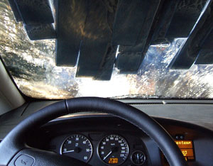

SQUONK11/FLICKR
Car washes are required to drain their water into sanitary sewers or filter and reuse it on-site. When you wash your car in a driveway or street, contaminants from the wash flow into storm sewers, which then discharge into our waterways.